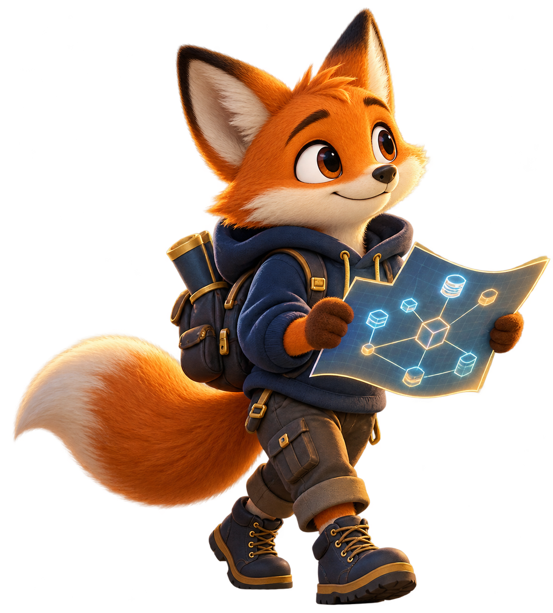

Interview case studies
Design the
whole system.
Structured prompts that train the reasoning behind a strong system-design interview—not a memorised diagram.

Interview case studies
Structured prompts that train the reasoning behind a strong system-design interview—not a memorised diagram.
